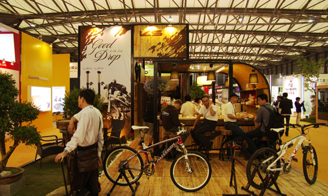

2014年02月06日
以生产自行车前叉、头管、五通、座管在业界享有盛誉的元渝机械（深圳）有限公司，将在第24届中国国际自行车展览会N2馆1020展台与采购商、经销商会面。

2014年02月06日
以生产花鼓、轮组、电动车零件的久裕公司将在“中国展”N2馆0830展位，隆重推出四款碟刹轮组，凭借精美、高端、高品质的生产技术吸引观众的眼球。

2014年02月06日
Brooks Plump Grip把套采用一层一层的环状牛皮拼接而成，可根据车把的具体状况调整把套的长短（例如使用转把变速就要使用较短的把套，特殊把型也会对把套有长短不同的要求）。
2014年02月06日
Nike正式发表了发布了新一代的运动手环 Nike+ FuelBand SE 。和前代相比，除了增加了 Volt(霓虹黄), Total Crimson(红) 和 Pink Foil（粉色）三种...
2014年02月06日
Cycloc自行车存放装置在英国开发研制，这是一个带有扭转装置的自行车存放器，具有时尚的造型，尤其适合都市中居住空间狭小的骑车族使用。有了Cycloc，您就能像挂外套那样把自行车挂在墙上。